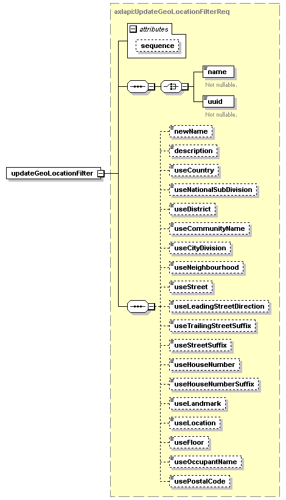

| diagram |  | ||||||||||||
| namespace | http://www.cisco.com/AXL/API/10.5 | ||||||||||||
| type | axlapi:UpdateGeoLocationFilterReq | ||||||||||||
| properties |
|
||||||||||||
| children | name uuid newName description useCountry useNationalSubDivision useDistrict useCommunityName useCityDivision useNeighbourhood useStreet useLeadingStreetDirection useTrailingStreetSuffix useStreetSuffix useHouseNumber useHouseNumberSuffix useLandmark useLocation useFloor useOccupantName usePostalCode | ||||||||||||
| attributes |
|
||||||||||||
| source | <xsd:element name="updateGeoLocationFilter" type="axlapi:UpdateGeoLocationFilterReq"/> |